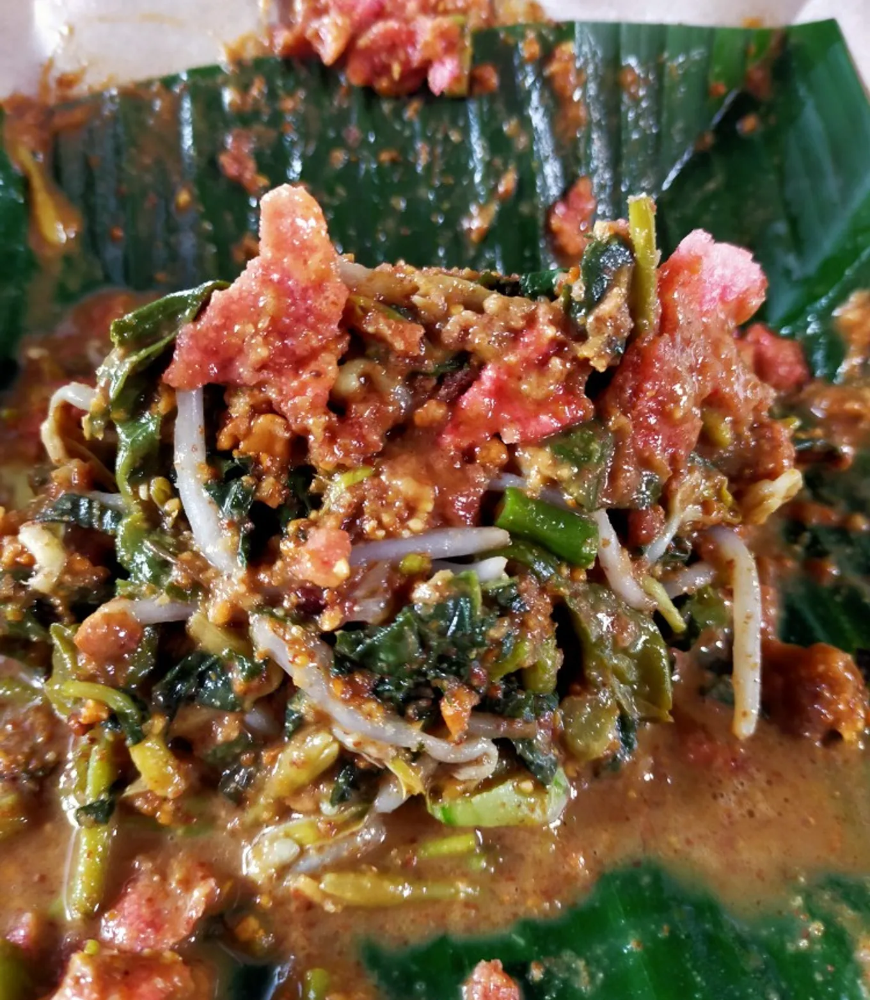

Sambal Dadak & Ayam Segar
Lezatnya
Pecel Ayam
Asli Rempah.
Nikmati ayam goreng ungkep dengan bumbu rahasia, disajikan hangat dengan sambal terasi pedas nendang dan lalapan segar.

Nikmati ayam goreng ungkep dengan bumbu rahasia, disajikan hangat dengan sambal terasi pedas nendang dan lalapan segar.
"Dari dapur tradisional untuk meja makan Anda."
 25k
25k
Ayam bagian dada yang empuk dengan kremesan krispi.
 23k
23k
Lele goreng garing yang gurih sampai ke tulang.

20khidangan salad sayuran tradisional khas Aceh yang disiram dengan sambal kacang kenta
 20k
20k
variasi kuliner pecel khas Jawa yang dipadukan dengan udang goreng, menghadirkan perpaduan rasa gurih, pedas, dan segar